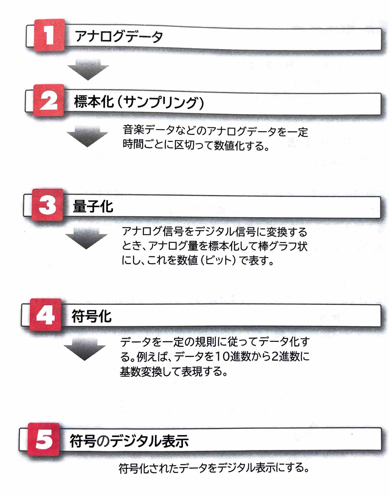

【 符号理論 】
あらゆる情報は数値に変換して情報量として表現できます。情報を数値に変換することを｢符号化｣といい、符号化することで、データの利用範囲を広げ、データ活用の効率化を実現できます。
｢符号理論｣とは、情報を符号化して伝送を行う際の正確性や効率性に関する理論のことで、情報理論を応用した理論です。
(1)符号化の種類
符号化には、次の2つの種類があります。
●情報源符号化
｢情報源符号化｣とは、転送前のデータを効率的に圧縮することを目的とした符号化のことです。インターネット上でのデータ圧縮形式やコンパクト符号などがあります。
●通信路符号化
｢通信路符号化｣とは、データ転送時に通信路上に存在する雑音などの障害への耐性を強化するために、余分なデータビット(冗長ビット)を追加する符号化のことです。音楽CDではリード・ソロモン符号を使って傷やほこりによる誤りを訂正しています。データの信頼性を高めるために、誤り検出訂正や前方誤り訂正(FEC)などがあります。
(2)A/D変換
文章や帳票、写真、絵画などのアナログなものをコンピュータで取り扱えるようにするには、デジタル信号(0と1からなるコード)に変換して｢デジタル化｣する必要があります。｢A/D変換｣とは、アナログ信号からデジタル信号へ変換することです。逆に、デジタル信号をアナログ信号に戻すことを｢D/A変換｣といいます。
A/D変換の流れは、次のとおりです。
